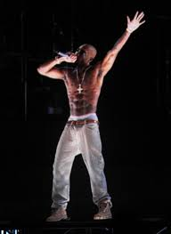
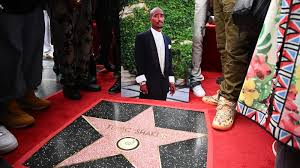

Tupac Amaru Shakur, conocido artísticamente como 2Pac, nació el 16 de junio de 1971 en Nueva York. Fue un rapero, actor y activista, considerado uno de los más grandes exponentes del hip-hop. Su música abordaba temas de desigualdad, violencia y lucha social.
Criado en un entorno difícil, estudió en la Escuela de Artes de Baltimore antes de mudarse a California, donde inició su carrera musical. Su estilo y mensaje lo convirtieron en un ícono del rap.
En 1991 lanzó su álbum debut 2Pacalypse Now, con letras que criticaban la brutalidad policial y el racismo. Con discos como Me Against the World (1995) y All Eyez on Me (1996), se consolidó como uno de los raperos más influyentes de su época.
2Pac estuvo involucrado en la famosa rivalidad entre la Costa Este y la Costa Oeste, enfrentándose con The Notorious B.I.G. y Bad Boy Records. Su afiliación a Death Row Records y su relación con Suge Knight lo llevaron a una etapa de mayor conflicto en su vida.
El 7 de septiembre de 1996, 2Pac fue baleado en Las Vegas tras asistir a una pelea de Mike Tyson. Murió seis días después, el 13 de septiembre de 1996. Su asesinato sigue sin resolverse, alimentando numerosas teorías y especulaciones.
2Pac dejó un impacto duradero en el hip-hop y la cultura. Sus letras siguen vigentes, y su influencia se siente en generaciones de raperos que han seguido sus pasos. Su imagen es sinónimo de resistencia, lucha y autenticidad en la música.
